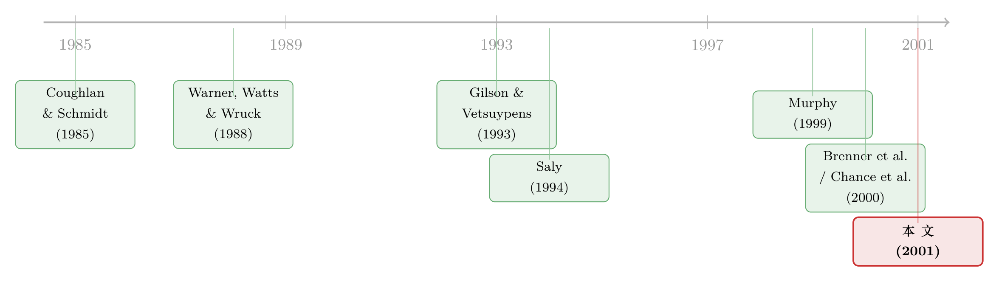

给「水下」的期权重新定价，到底是老板在自肥，还是公司在救火？
本文读的是 Carter & Lynch (2001, Journal of Financial Economics)：把 1998 年给高管股票期权「重新定价（repricing）」的 263 家公司，和一组同样手握「水下期权」却按兵不动的对照公司放在一起比，作者发现——重新定价更多发生在年轻的、高科技的、期权跌得更深的公司，且只跟随公司自身的糟糕业绩、而非行业普遍的下行；至于「老板把持董事会、趁机给自己谋利」这套代理故事，一点证据都找不到。
1 一个让机构投资者拍桌子的动作
先讲个场景。某家公司去年给高管发了一批股票期权，行权价 20 美元。一年过去，股价跌到 8 美元。这批期权深深地埋在水面之下——「水下期权（out-of-the-money option）」——理论上还有效，可它对高管的激励几乎归零：股价从 8 涨到 9，期权依然一文不值，老板凭什么为这一块钱去卖命？
于是董事会做了一件事：把行权价从 20 直接调到 8。这就是期权重新定价（repricing）。
这个动作一出来，机构投资者就炸了锅。《华尔街日报》、《商业周刊》连篇累牍地批评：股价跌了，本该是高管「赔钱」的时候，你反手把行权价往下一拨，等于奖励了搞砸业绩的人（The Wall Street Journal, 1999；Business Week, 1999）。普通股东的期权可没人帮你重新定价——凭什么老板的就能?
可公司这边也有一肚子委屈：我们重新定价，是为了留住人。股价跌下来不一定是高管的错，可能是整个行业、整个市场在跌；如果不把激励重新「续上」，这些骨干明天就被隔壁开着新期权的公司挖走了。
这就是全文的张力所在：同一个动作，一边读出的是「自肥（agency problem）」，一边读出的是「救火（restore incentives / retention）」。Carter 和 Lynch 想做的，就是用一套足够干净的研究设计，把这两种解释分开称重。
2 为什么过去的研究「分不清」
这篇论文真正的功夫，不在结论，而在它怎么把对照组挑出来。要理解这一点，得先看看前人卡在哪里。
首先，一个自然的做法是：拿重新定价的公司，去比「不重新定价」的公司，看两者股价表现差多少。前人确实发现——重新定价跟糟糕的股价业绩高度相关（Gilson and Vetsuypens, 1993；Chance et al., 2000；Brenner et al., 2000）。
可接着，一个麻烦的问题浮出来：你拿来当对照的「不重新定价」的公司里，混进了大量期权还在水上的公司。这样一来，「股价跌」这个变量就一身多职，它同时在替三件事说话：
- 这家公司的期权是不是水下的；
- 期权水下到什么程度（跌 5% 还是跌 50%）；
- 股价下跌的来源——是行业的，还是公司自己的。
这三件事，每一件都可能单独驱动重新定价。可只要你的对照组里掺了「期权在水上」的公司，「股价业绩」这根变量就把三者搅成一锅粥，谁也分不清是谁在起作用。Brenner et al. (2000) 在控制了行业表现之后，发现股价跌得越狠、重新定价的概率越高——但作者一针见血地指出：这个负相关，到底是「期权水下」、「水下程度」、还是「下跌来源」在驱动，根本无从判断。
但真正关键的一步在于——Carter 和 Lynch 把对照组死死限定在「同样手握水下期权、却选择不重新定价」的公司。再叠加一个单独的变量，专门衡量「水下到什么程度」。这样一来：
- 「是不是水下」这个维度被对照设计消掉了（两组都是水下）；
- 「水下程度」被一个独立变量接管了；
- 剩下的股价业绩，才被进一步拆成行业与公司特定两块。
到这一步，「下跌来源」对重新定价的影响，才第一次被干净地剥离出来。这就是全文的方法论核心：用对照组的设计，给一个纠缠的变量解套。（关于同一时期、用 ExecuComp 样本切入同一问题的另一条路径，可参见《给「水下」期权重新定价，到底是老板在赖着不走，还是公司在自救？》。）
3 样本：被前人「漏掉」的那 92%
光有设计还不够，样本本身也藏着玄机。
前人（Brenner et al., 2000；Chidambaran and Prabhala, 2000）大多用 ExecuComp 数据库里的公司。可作者一查就发现一个惊人的事实：在他们从代理声明（proxy statement）里搜出来的 263 家 1998 年重新定价的公司里，只有 8%（21 家）在 ExecuComp 里。换句话说，过去的研究盯着的，是重新定价世界里很小、而且很不一样的一角。
有多不一样？作者把这 21 家 ExecuComp 公司和另外 242 家非 ExecuComp 公司对比：
- 规模：ExecuComp 公司总资产中位数
$781.6百万，非 ExecuComp 只有$65.8百万——差了一个数量级； - 年龄：ExecuComp 公司中位数 11.5 年，非 ExecuComp 只有 3.0 年；
- 高科技占比：ExecuComp 里只有 33.3% 是高科技公司，非 ExecuComp 里高达 56.2%；
- 内部人持股：非 ExecuComp 的董事与高管持股中位数 20.5%，ExecuComp 只有 7.9%。
这些差异，恰恰都落在「能解释重新定价」的那几条维度上。结论很硬：只研究 ExecuComp，会系统性地看错这件事。要看清重新定价，必须把样本扩展到那些又小、又年轻、又是科技公司的「沉默的大多数」。
具体的样本构造也颇见功夫。重新定价组：在 Lexis/Nexis 上搜代理声明，剔除掉「只涉及 1998 年之前的重新定价」「因并购/拆股等交易触发的重新定价」「只给非高管员工重新定价」等情形；还特意剔除了 1998 年 12 月 4 日至 15 日这个窗口——因为财务会计准则委员会（FASB）当时宣布要改变重新定价的会计处理，导致这个窗口里出现了反常的「抢跑」式重新定价（Carter and Lynch, 2000），这些公司的动机和平时不一样。最终 263 家。
对照组：从所有 12 月财年末、有资产数据、1998 年没重新定价的 Compustat 公司（4,316 家）里随机抽取，逐一翻它们财务报表附注里的期权行权价，和该公司 1998 年最低月末股价比对——只要有任意一档期权的行权价高于这个最低股价，就认定它「持有水下期权」，纳入对照组，直到凑满 263 家。
4 主要结果：是救火，不是自肥
把这 526 家公司放进 logit 回归，三个核心发现一个个浮出来。
第一，年轻的、高科技的公司更爱重新定价。 重新定价组里高科技公司占 54.4%，对照组只有 33.8%（p=0.00）；重新定价组的公司年龄中位数 4.0 年，对照组 6.0 年（p=0.00）。作者甚至为「高科技」这个分类做了交叉验证：被归为高科技的公司，研发/销售比中位数 15.5%，非高科技的只有 0.3%——分类是站得住的。
第二，期权越深地埋在水下，越可能被重新定价。 重新定价组的期权平均「水下程度」是 52.5%（中位数 54.6%），对照组只有 32.3%（中位数 26.4%），p=0.00。这个结果直接支持「恢复激励」的故事：期权越深水下，pay-to-performance 敏感度衰减得越厉害（Murphy, 1999），重新定价的必要性也就越强。
第三——也是全文最漂亮的一刀——重新定价跟随的是公司自己的烂业绩，而不是行业的烂业绩。 看那张对照表里两行并排的数字：
- 行业累计月度回报：重新定价组 −10.3%，对照组 −11.0%，p=0.76——几乎没差别；
- 公司特定累计月度回报：重新定价组 −31.2%（中位数 −35.4%），对照组 −4.2%（中位数 −8.0%），p=0.00——天壤之别。
两组公司所处的行业一样惨，可重新定价的那一组，是它们自己比同行差得多。这个对比，正是前面那套对照设计才能逼出来的：把行业冲击当成共同背景扣掉之后，剩下的全是公司层面的特异表现。
第四个发现，是一个「什么都没找到」的发现，却同样重要。 作者用三个变量去抓代理冲突——内部人持股、高管是否在董事会任职、高管是否在薪酬委员会任职——结果在多元回归里全部不显著。机构持股也是：单变量上重新定价组的机构持股（24.4%）确实低于对照组（29.6%，p=0.01），但放进多变量框架后，这种「机构投资者扮演治理角色、压制重新定价」的效应消失了。
这是和前人最大的分歧。Chance et al. (2000) 发现内部人在董事会任职会提高重新定价概率，Brenner et al. (2000) 发现高管进薪酬委员会也会。Carter 和 Lynch 用更晚、更具代表性的样本，找不到代理冲突的证据。作者给的解释是：1992 年 SEC 强化了重新定价的披露要求，要求公司在代理声明里登「10 年期权重新定价表」；几年下来，这种透明度可能已经把「趁机自肥」的空间挤掉了大半。
把这些拼起来，故事就立住了：重新定价的典型画像，是一家又小、又年轻、又是科技行业、自己业绩拉胯、期权深陷水下的公司——它最像的，不是一个老板在董事会里浑水摸鱼，而是一家在抢人的劳动力市场里、急着把激励续上、好留住骨干的公司。当然，作者也诚实地承认：「跟随公司自身烂业绩」这一点，本身既能读成「奖励了表现差的高管」（批评者的说法没错），也能读成「在竞争性劳动力市场里留人」（公司的说法也没错）——这两种解释，数据本身分不开。
5 文献脉络
这条研究线，是顺着「高管薪酬如何影响行为」这根主轴长出来的。
最早的根，扎在 CEO 更替与业绩的关系上：Coughlan and Schmidt (1985) 和 Warner et al. (1988) 发现，CEO 更替和股价表现负相关——业绩差，老板就有走人（或被换掉）的风险。这给后来「重新定价是为了留人」的逻辑埋下了伏笔：如果差业绩会逼走高管，那公司就有动机用重新定价去对冲这种流失。

接着，Saly (1994) 从理论上论证：在熊市里，把期权重新定价，可以保护高管免受他们无法控制的市场层面冲击——这正是「行业/市场下行不该由高管买单」这套说法的学理来源。Gilson and Vetsuypens (1993) 则在财务困境公司里，第一次系统记录了重新定价与负面业绩的关联。Murphy (1999) 在《劳动经济学手册》里把核心机制点透：期权越往水下走，pay-to-performance 敏感度越低——这是「恢复激励」假说的支点。
然后，到了 2000 年前后，三篇论文几乎同时把重新定价推上台面：Chance et al. (2000) 发现内部人控制董事会会提高重新定价概率；Brenner et al. (2000) 发现高管进薪酬委员会也会、且重新定价跟随差股价；Chidambaran and Prabhala (2000) 则把治理机制、管理层更替和重新定价串起来分析。这三篇，构成了「代理冲突驱动重新定价」的主流叙事，但它们大多依赖 ExecuComp 样本、且对照组不够干净。
而 Carter and Lynch (2001) 所处的位置，正是对这条主流叙事的纠偏：更晚的样本（1998）、更具代表性的样本（92% 在 ExecuComp 之外）、更干净的对照（都持水下期权）、以及把行业与公司业绩拆开的设计。它把结论从「代理问题」拨回到「激励与留人」。
6 评论与延伸（Q&A + 研究方向）
(a) 几个可能的疑问
Q：这篇文章不是因果识别，凭什么相信它的结论？
诚实地说，这是一篇横截面关联研究，不是 DiD 或 IV，谈不上严格因果。它的可信度来自对照组的构造：把对照限定为「同样持水下期权却不重新定价」的公司，从而把「是否水下」这个最大的混淆变量从设计上消掉了。这比前人「拿全市场当对照」要干净得多，但残余的内生性（比如公司为什么会让期权深陷水下）依然存在。
Q：「跟随公司自身烂业绩」既能解释成自肥、也能解释成留人——那这篇文章到底证明了什么？
它证明的是一个排除性结论：重新定价不是由行业下行驱动的（那条 p=0.76 的零结果），也不是由可观测的代理冲突变量驱动的。至于剩下的「公司特定差业绩」，数据确实无法把「奖励差高管」和「竞争市场留人」分开——作者对此很坦白。文章的贡献是缩小了解释空间，而不是给出唯一答案。
Q：为什么对照组要用「公司整体期权组合」来代理「高管期权」？这靠谱吗？
这是数据所限的无奈之举：高管个人的期权组合拿不到，作者只能用财务报表附注里全公司的期权组合，假设「公司有水下期权 ⇒ 高管也持有代表性的水下期权」。对约一半的对照公司，还得假设某一档期权在行权价区间内均匀分布。这是真实的测量噪声，会让对照组的「水下程度」估得不那么精确——但它倾向于削弱而非夸大组间差异，所以 52.5% vs 32.3% 这个差距大概率是保守的。
Q：1998 年这个特殊年份，会不会让结论没有代表性？
1998 年确实有它的特殊性——年中有一波市场动荡，年底又撞上 FASB 改变重新定价会计处理的公告。作者已经把 12 月 4–15 日那个反常窗口剔除了。但「单一年份、单一截面」本身就限制了外推：你很难说这套画像在 2001 年科网泡沫破裂后、或在金融危机里同样成立。
Q：和 Chidambaran-Prabhala、Brenner 等人「找到了代理问题」的结论冲突，谁对？
不一定是谁错，更可能是样本与时点不同。前人用 ExecuComp（大、老、非科技），Carter-Lynch 用更广的样本（小、年轻、科技）。作者的猜想是：1992 年披露新规的长期效应，逐渐挤掉了代理动机的空间，所以越晚的样本越难看到代理冲突。这本身是个可检验的假说。
Q：重新定价和「直接发一批新期权」有什么区别，为什么非得重新定价？
文中没有正面展开，但逻辑上：重新定价不增加授予的期权数量、对每股稀释更小、且操作上只需董事会批准。直接发新期权会进一步稀释股东、也更扎眼。对一家现金紧张、想低调续上激励的小科技公司，重新定价是成本更低的工具——这也呼应了「小公司更爱重新定价」的发现。
(b) 几个可能的研究问题与提案
1. 把「留人 vs 自肥」真正分开：用高管离职数据做事件研究。
【经济故事】本文最大的遗憾，是「跟随公司自身差业绩」分不清是留人还是自肥。如果能拿到重新定价之后高管的实际去留数据，就能直接检验：重新定价是否真的降低了关键高管的流失率？若降低，留人故事成立；若不降，自肥嫌疑上升。 【可行性】中。需要把代理声明里的高管名单跨年追踪（构造离职变量），并和重新定价时点对齐。数据可得但极费人力（作者自己也提到「本项目需要大量数据采集」）。识别上仍有内生性，但比纯截面强。
2. 重新定价与公司债/信用利差：债权人怎么看这件事？
【经济故事】重新定价是个纯粹的「股东—高管」故事，可它对债权人未必中性：恢复高管的股权激励，可能加大风险承担（risk-shifting），从而抬高信用利差。一家深陷水下、又年轻又科技的公司宣布重新定价，债市会不会要更高的补偿？ 【可行性】中偏低。难点在于这类小型科技公司多数没有公开债、或债券流动性极差，样本会很薄。可退而求其次，用银行贷款利差（DealScan）或 CDS（若有）做横截面比较。识别依赖「重新定价公告」作为事件，干净但样本受限。
3. 外资/机构持有人结构与重新定价的治理作用。
【经济故事】本文发现机构持股在多变量里不压制重新定价，但「机构」是个笼统的篮子。不同类型的持有人（指数基金、主动基金、外资）治理意愿天差地别。是否某一类「长期、主动、监督型」的持有人，才真正约束了重新定价？这能给「机构治理失效」一个更细的解读。 【可行性】高。13F + 机构类型分类（如 Bushee 的分类）是成熟数据，可直接把本文的机构持股变量拆成几类重做回归。识别仍是关联性，但成本低、立刻 doable。
4. 把样本推到多个年份，检验「披露新规的长期效应」假说。
【经济故事】作者推测代理动机随 1992 年披露新规逐年衰减。这本身是个时间趋势假说：如果把重新定价样本从 1993 一直拉到 2000 年代初，代理冲突变量的系数应该逐年走弱。这能把一个「猜想」变成一条可检验的曲线。 【可行性】中。需要逐年重建重新定价样本（代理声明搜集），工作量大；但 2006 年后期权费用化（FAS 123R）又会带来新的结构性断点，反而提供了额外的识别窗口。
5. 重新定价之后的真实业绩：它救回了激励吗？
【经济故事】「恢复激励」是本文的主推解释，但文章只论证了动机，没检验结果。重新定价之后，公司的经营业绩、研发投入、员工保留率是否真的改善？如果毫无改善，那「恢复激励」就只是说辞。 【可行性】中。可用重新定价公司与匹配的对照公司，比较后续 1–3 年的 ROA、研发/销售、关键员工留存。难点是反向因果与匹配质量——业绩本就在均值回归，需要小心地处理「运气回归」。
7 我的判断
贡献。 这篇文章的价值，几乎全部凝结在它的对照组设计上。把对照限定为「同样持水下期权却不重新定价」的公司，再叠加一个独立的「水下程度」变量，作者干净利落地把一个一身多职的「股价业绩」变量解了套——这是教科书级别的、用设计而非工具变量去对付混淆的范例。由此得到的两个核心结论（重新定价跟随公司特定而非行业业绩；找不到代理冲突的证据），既反直觉，又对「重新定价是不是自肥」这场公共争论有直接含义。它还顺手揭穿了一个数据陷阱：92% 的重新定价发生在 ExecuComp 之外，只盯着 ExecuComp 会系统性看错这件事。
对识别的担忧。 三点。其一，这终究是单一年份的横截面关联，谈不上因果；公司为何会让期权深陷水下，本身可能与那些未观测的、同时驱动重新定价的因素相关。其二，用「全公司期权组合」代理「高管期权」、并对一半对照公司做均匀分布假设，引入了真实的测量噪声——虽然方向上偏保守。其三，最关键的「公司特定差业绩」依然是双解的：留人和自肥，数据分不开；文章实际证明的是「不是行业、不是可观测的代理变量」，这是一个排除性的、而非肯定性的结论。
后续想看到什么。 我最想看的，是把「动机」补成「结果」：重新定价之后，关键高管真的留下来了吗？经营业绩真的反弹了吗？只有把重新定价后的高管去留与公司业绩追踪起来，才能在「留人」与「自肥」之间真正落子。其次，我很好奇债权人这一侧的反应——一个把股权激励重新拉满的动作，对信用风险意味着什么，至今几乎是空白。
参考文献
Brenner, M., Sundaram, R., Yermack, D. (2000). Altering the terms of executive stock options. Journal of Financial Economics 57, 103–128.
Carter, M.E., Lynch, L.J. (2001). An examination of executive stock option repricing. Journal of Financial Economics 61(2), 207–225.
Chance, D., Kumar, R., Todd, R. (2000). The 'repricing' of executive stock options. Journal of Financial Economics 57, 129–154.
Chidambaran, N., Prabhala, N. (2000). Executive stock option repricing, internal governance mechanisms, and management turnover. Working Paper, Tulane University.
Coughlan, A., Schmidt, R. (1985). Executive compensation, management turnover, and firm performance. Journal of Accounting and Economics 7, 43–66.
Gilson, S., Vetsuypens, M. (1993). CEO compensation in financially distressed firms: an empirical analysis. The Journal of Finance 48, 425–458.
Hall, B. (1998). The pay to performance incentives of executive stock options. NBER Working Paper No. 6674.
Murphy, K. (1999). Executive compensation. In: Ashenfelter, O., Card, D. (Eds.), Handbook of Labor Economics, Vol. 3B. North-Holland, Amsterdam.
Saly, P. (1994). Repricing executive stock options in a down market. Journal of Accounting and Economics 18, 325–356.
Shleifer, A., Vishny, R. (1997). A survey of corporate governance. The Journal of Finance 52, 737–783.
Warner, J., Watts, R., Wruck, K. (1988). Stock prices and top management changes. Journal of Financial Economics 20, 461–492.